Rule-Rewriting Cellular Automata
Rule-Rewriting Cellular Automata and the Edge of Chaos
Abstract
We study cellular automata in which each cell carries, alongside its binary state, the eight-bit rule it executes, and in which operators rewrite those rules as the system runs. A rule-rewriting operator is defined by a permutation of the eight truth-table positions: it writes the negation of position to position . The resulting family of operators is classified exactly, with the central statements formally verified: an operator has an unchanged rule exactly when every cycle of has even length; a permutation with cycles, all even, has unchanged rules; and every unchanged rule has four of its eight outputs active, so Langton’s activity parameter is at every fixed point. The classical edge-of-chaos coordinate therefore cannot distinguish these operators, and in a finite-size scan the transition region does not sharpen with lattice size, so we find no critical point. We then expand the class of automata architectures, and examine criticality by measuring how far the effect of a single-cell change travels once a run is forked. In every architecture tested, that distance is governed by whether rule updates read the current state field: removing the state-to-rule input roughly halves it; replacing a growing fraction of current state readings with readings of a frozen copy of matched spatial statistics reduces it smoothly; and rule diversity, mutation, refuges, niches, and rule mobility leave it unchanged. A locally triggered gate reproduces the same ordering—reading current states raises the distance, reading a frozen field of matched statistics and firing rate lowers it. Finally, we make the operator assignment itself a per-cell heritable state—an exotype—and ask whether local dynamics alone can find and hold the regime in which frozen and changing regions coexist and merge into visibly complex patterns, which an external selection policy helped us find interactively. Within the tested family of exotypes, local selection was not able to recover the observed behaviour. However, we constructed local interventions that do prevent freezing, and hold a foam of small frozen islands, rather than the exotype-driven configuration’s extended complex regions.
keywords
cellular automata, rule evolution, Langton’s lambda, self-modifying systems, edge of chaos, artificial life, permutation operators, exhaustive classification, damage spreading, perturbation analysis1 Introduction
Each cell of the automata studied here carries, alongside its binary state, the eight-bit rule it executes, and operators rewrite those rules while the system runs. The findings, in the order the sections carry them (Figures 1a–1c outline them, with the evidence in miniature):
- 1.
Whether an operator leaves any rule unchanged is decided by cycle parity. Operators based on permutations with only even cycles leave some rules unchanged, and every such fixed rule is balanced --- active on four of its eight outputs --- so the classical edge-of-chaos coordinate, which ranks rules by that fraction, cannot distinguish the fixed points. Cycle structure settles that question and no more: it does not predict what an operator does dynamically. The operators without fixed points are studied alongside them, dynamically.Supplement 2 carries the formal statements and proofs; Supplement 1 (Boxes 1–6) the census and its controls: the census split is reproducible under a mixing-fraction control, survives the removal of neighbour blending, and shows no finite-size evidence of a critical point over the tested range.
- 2.
How far the effect of a one-cell change spreads is moved by whether rule updates read the current state field. Of the other coordinates varied, only a conservative transport that moves rules between cells also raises it; sustained rule diversity, mutation, refuges, niches and rule mobility leave it unchanged.Supplement 1 (Boxes 7–12) calibrates the instrument — causal reach on a scale anchored by elementary rules of known behaviour — and records that coupling strength moves reach monotonically while sustained rule diversity does not move it at all. A gate that decides locally when rewriting fires re-derives the same ordering from an independent construction.
- 3.
The condition in which changing and unchanging regions persist side by side has a strictly local specification---the run that produced our found configuration is one---and it is not scarce: with the adoption rule switched off it is what these lattices do by default, and the freezing we first read as a boundary is an effect of the adoption rule at high precision. What we did not find is a locally computable quantity that identifies that outcome from within a run; the local interventions that do prevent freezing hold a foam of small frozen islands, not the found configuration’s extended regions.Supplement 4 documents the search apparatus behind the examples: on the surface of the two selection-rule parameters, the region of non-zero persistence is an L-shaped ridge, and the reported configurations sit on its arms. Its validation result is the specific obstacle to an endogenous search: a runtime-computable pair of observables tracks an intrinsic objective well ( held out) and causal reach not at all ().
The object is a cellular automaton whose rules are themselves rewritten by an exactly classifiable family of operators. Each cell carries a binary state (the phenotype) and an eight-bit elementary rule (the genotype). An operator is defined by a permutation of the eight truth-table positions: it writes the negation of position to position , changing the rule in place while the automaton runs. There are such operators. The family was reached through a 2015 programming error whose spacetime diagrams showed regions that had stopped changing and regions that kept changing, persisting side by side (Corneli & Maclean 2015) — the visual signature associated with the phrase edge of chaos. That example is not a member of the family: its map is not injective, writing one position twice and another never, and the mechanism it exhibits depends on precisely that non-injectivity, so no permutation reproduces it. Locating it is what placed the bijective core in view, and that core is small enough to classify exactly. Four kinds of object appear — the operators, fixed architectures built from them, conditional compositions that switch between them, and lattices in which the operator assignment is itself per-cell state; Table 1 states which measurements attach to which, and no measurement in this paper transfers between them.
Part I shows that the classical edge-of-chaos coordinate cannot work in this family. Langton’s activity parameter — the fraction of a rule’s eight outputs that are active — is the traditional coordinate for placing a rule between order and chaos. Three theorems, formally verified in Lean 4 with Mathlib, make it degenerate here: an operator leaves some rule unchanged exactly when every cycle of has even length; a permutation with cycles, all even, leaves exactly rules unchanged; and every unchanged rule has exactly four active outputs, activity . A coordinate that takes the same value at every fixed point cannot rank them. Cycle structure does not substitute for it — operators of identical cycle type differ in whether their rule fields collapse to a few rules or stay diverse — and in a finite-size scan the transition region does not narrow as the lattice grows, so we find no critical point.
Part II replaces the parameter with a perturbation measurement, and one condition governs it: whether rule updates read current cell states. The measurement avoids computing statistics over the field (which would presuppose the regimes it is meant to detect): flip one cell, fork the run, and measure how far the difference between the two copies travels, calibrated against elementary rules of known behaviour. Removing the state-to-rule input roughly halves the distance reached. A dial that replaces a fraction of current state readings with readings of a frozen copy — itself a real phenotype, so the input’s spatial statistics are matched at every setting — reduces the distance smoothly. Sustained rule diversity, mutation, spatial refuges, niches, and rule mobility leave it unchanged. The scale separates propagating from non-propagating systems; it does not classify dynamical regimes, and we make no such claim. Part II closes by re-deriving the same ordering from a construction sharing none of that machinery: a gate that decides locally, from the lattice itself, when rewriting fires. At matched firing rates, a gate that ignores cell states reproduces the prescribed-rate baseline exactly; the same gate reading current states exceeds it; and reading a frozen state field of matched spatial statistics and firing rate falls below it, in every tested pair. Current information, not spatial correlation, carries the effect.
Part III asks whether the system can find the coexistence condition from local observation. We found no quantity that does, and a control changes what the question presupposes. The quantity a cell would need decorrelates in about six steps, less than the observation window that discrimination requires, so fast decisions fail by variance and slow ones by staleness. Copying rules across phase boundaries accelerates the freezing it was designed to prevent. Undirected rule noise prevents freezing, but what it holds looks different: a foam of small frozen islands amid changing surroundings, against the extended coexisting regions of the found configuration (frozen fraction against ). Finally, a control. In these lattices cells adopt operators from their neighbours under a selection rule with an adjustable precision, and at high precision the test runs froze solid; re-running the same lattices from the same starting points with adoption switched off, none of thirty runs (two lattice sizes, two initial-condition families) froze or died out. The freezing observed at high precision is therefore an effect of the adoption rule at that setting, not a behaviour of the lattice underneath. The rule’s adjustable precision was nonetheless the working search tool: varying it from outside, between runs, is how the coexistence examples were found. How far any of this extends is open: the vocabulary is twelve operators of the forty thousand, and configurations outside this family were not tested.
Figures 1a–1c carry that outline in structured-proof form, one assertion per part. Each step is tagged by the kind of evidence behind it: theorems verified in Lean 4, constructions, measurements, matched controls, audited negative results, and the two probes directed by the related-work audit. Beneath each outline runs a gallery of details cut from the evidence itself—spacetime plates and damage fields—each cross-referenced to the figure that develops it and to the numbered step it illustrates, so the series can be read as a visual index of the paper as well as its logical skeleton. A scope seam runs through the outline, and it is deliberate. Assertions – establish a coordinate; assertion concerns a regime. The operator family is shared between them, but the evidence is not: no step of cites a measurement of , and reach does not predict regime ().
| Where | Object | What is measured on it |
|---|---|---|
| Part I | Rule-rewriting operators (all ) | fixed rules, their activity, and an exhaustive census of which operators sustain diverse rule fields |
| Part II | Fixed update architectures composing operators with a state-reading step | how far a one-cell perturbation travels, under ablation of the state-to-rule input and under the graded-staleness dial |
| — | Conditional compositions (gates) whose firing condition is computed from the lattice | perturbation travel at matched firing rates: blind, current-state, and frozen-state conditions |
| Part III | Exotype lattices, where the operator assignment is itself per-cell state | phase outcomes under an optimizing selection policy, and controls with the policy removed |
Assertion (Part I). The classical edge-of-chaos coordinate cannot govern this family.
[def] A rule-rewriting operator is a permutation of the eight truth-table positions, writing to position ; the family has members.
[thm] An operator leaves some rule unchanged iff every cycle of is even (Lean 4).
[thm] An all-even with cycles fixes exactly rules, and every fixed rule has activity (Lean 4).
[meas] Census of all cycle types: odd-cycle operators sustain diverse rule fields; all-even types split—by the specific permutation, not its cycle type.
[neg] Finite-size scan: the order–disorder crossover does not narrow as the lattice grows; no critical point at tested sizes.
By , is constant where it would have to discriminate; by – neither cycle algebra nor a parameter scan replaces it. Propagation must be measured causally .
Assertion (Part II). Whether rule updates read current cell states governs how far a perturbation reaches; nothing else tested does.
[def] The river: a collapsing propagator composed with a phenotype-reading construction step, sustaining structured phenotype indefinitely.
[meas] Fork-and-flip causal reach, calibrated on elementary rules: the river reaches reading live states, with the read ablated.
[ctrl] A dial replacing live reads with a frozen field of matched spatial statistics: reach monotone in causal currency, spanning –.
[neg] Sustained diversity, mutation, refuges, niches, and mobility leave reach unchanged; conservative transport alone also moves it, breaking the diversity confound.
[meas] Independent re-derivation: a local gate that is blind reproduces the prescribed-rate baseline; reading live states exceeds it; reading a matched frozen field falls below it, in every tested pair.
Assertion (Part III). The coexistence regime is locally produced and default-abundant; what is missing is a locally computable certificate of it, and any tested way back to the found configuration.
[def] The exotype: becomes per-cell state, transmitted between neighbours under a selection rule with precision .
[meas] Three outcomes at tested parameters: the changing phase wins, the frozen phase wins, or both persist for the full horizon (the found configuration).
[neg] No tested local quantity ranks operators from within a run: the field a cell would need decorrelates in steps, inside any discriminating window.
[ctrl] Adoption switched off: control runs neither freeze nor die—coexistence is the substrate’s default; freezing is the policy’s effect at high .
[probe] The freeze is nucleation-limited, the bistable phenomenology co-evolving substrates predict (Gross et al. 2006): an established frozen front invades ( seeds), yet the frozen phase never arises from developed churn ( in steps)—two macrostates at matched parameters, selected by history.
[probe] A one-sided rule in the design class of Droste et al. 2013—write only into long-settled cells—holds a mixed state at a sixth of the dose of its randomly placed yoke: placement informs once the trigger is one-sided; the held state is a foam, not ’s found configuration.
2 Related Work: A New Operator Family Among Familiar Phenomena
The idea that a cellular automaton’s rule can itself be a dynamical variable is not new. Structurally dynamic CA couple the lattice topology to the value field while leaving the local function fixed (Ilachinski & Halpern 1987); rule-changing and self-referential CA let the state field modify the update (Mori et al. 1998; Pavlic et al. 2014); the Game of Life has been run under step-by-step rule switching (Miszczak 2023); and graph-rewriting automata embed their own rule set as manipulable data in the spirit of von Neumann’s constructors (Tomita et al. 2007). Per-cell rules are likewise established: cellular programming co-evolves a rule per cell with neighbour exchange (Sipper 1996), non-uniform CA are a standard object (Dennunzio et al. 2011), and, closest to our construction, Khajehabdollahi et al. 2023 attach local rule parameters to each cell of an Ising lattice and update them online from the state field—the genotype–phenotype split of §3§3An Operator That Rewrites Rules by Permutation, two years earlier and in another community. What none of these supplies is the object this paper studies: a group-theoretic family of rule-table maps, enumerated exhaustively, applied as the update law of a running lattice, with the operator’s fixed-point structure derived as a theorem. The nearest formal neighbours each break at least two of those four conjuncts: Cattaneo et al. 1997 classify transformations of rule space exactly, but as static conjugacies applied once, not iterated operators; Li & Packard 1990 apply operators to truth-table positions across all rules, but their family is the eight single-bit flips, which have no interesting fixed-point structure where an action does; and the most recent comprehensive CA taxonomy has five families and no category for rules rewritten during evolution (Rollier et al. 2025). The symmetry group the ECA literature does use is reflection complement, of order four (Schaller & Svozil 2025); it is not , and the negation-carrying family of Equation (1) does not appear in it.
The balance half of Part I’s theorem has an ancestor that must be named: Hedlund’s theorem that every surjective CA is balanced pins the most canonical structural subfamily of rule space at (Hedlund 1969), and the constraint-forces-balance mechanism remains active in general settings (Capobianco et al. 2017), including non-uniform CA (Paturi 2025)—the setting our lattice instantaneously is. is also known to be many-to-one at mid-range generally (Sakai & Kanno 2002a). What Part I adds is not that a structural condition forces balance but where the degeneracy lands: on the fixed-point set of a rule-rewriting operator, the set the rule dynamics itself selects. That a rule-table coordinate underdetermines the dynamics is meanwhile a recognised open problem (Vispoel et al. 2022), and the edge-of-chaos hypothesis the coordinate served remains contested in both its biological and its computational forms (Teuscher 2022; Roli et al. 2018; Carroll 2020; Park et al. 2023).
The freezing that Part III measures is an absorbing-state transition, and that literature calibrates what our finite-size scan can and cannot say (Hinrichsen 2000). Randomness in a CA’s local rule moves such transitions out of the directed-percolation class (Noest 1986); within uniform ECA, asynchrony produces sharp DP-class transitions, with a symmetry of the rule changing the class (Fatès 2009)—there the tuned coordinate is an external update parameter, here it is the rule field itself. Under quenched disorder, moreover, a broad, size-drifting crossover is the predicted finite-size signature of a genuine transition with activated scaling (Hooyberghs et al. 2004; Vojta 2006), resolvable only at scales far beyond ours (Vojta et al. 2009); spatially extended defects can smear the transition away entirely (Vojta 2004), and a rule field rewritten at every step is also a temporally fluctuating environment in the sense of Vázquez et al. 2011. Our no-critical-point statement is therefore scoped to the sizes tested (18 Limits); we note that co-evolving substrates are also known to render such transitions first-order with hysteresis (Gross et al. 2006), a reading our data do not yet exclude.
Part III’s interventions belong to a control literature with settled vocabulary. Keeping a system out of an absorbing regular state is chaos maintenance (Yang et al. 1995; In et al. 1995); actuating a subset of sites is pinning control, whose required density is set by noise and symmetry (Grigoriev et al. 1997); and control of Boolean CA by copying a master configuration into a fraction of sites—the class our boundary-adoption rule falls into—is studied, including boundary-only actuation with known reachability limits (Bagnoli et al. 2012; Bagnoli et al. 2018). Notably, Bagnoli et al. 2012 site their controllers by a locally computable sensitivity (Boolean derivatives, the same object as our fork-and-flip), and it works—for convergence to a prescribed target, which is not our objective of holding a two-phase mixture. Control inputs that produce the opposite of their design intent have precedent (Hilker & Westerhoff 2006; Wackerbauer & Kobayashi 2007), as does the maintenance of an ordered–chaotic coexistence by global feedback (Sieber et al. 2014); the open question our negative addresses is strictly the local one.
The positives in the self-tuning literature sharpen that negative rather than blunting it. Local rewiring rules do drive networks to criticality (Bornholdt & Rohlf 2000), but the successful rules read what is, in the authors’ own framing, a locally estimated order parameter of the global dynamics (Bornholdt & Röhl 2003); the general mechanism requires order-parameter feedback with a drive rate tuned toward zero (Sornette et al. 1995), or rates tuned with system size (Pruessner & Peters 2006), and without a conservation law the result is quasi-criticality rather than the real thing (Bonachela & Muñoz 2009). Closest to our search, Droste et al. 2013 derive a local rule that self-organises a neural network to criticality and name the obstruction we measure—resting sites carry no information about the global phase—solving it with an asymmetric rule that acts tentatively in ignorance and decisively on one-sided evidence. Every quantity Part III tests is a symmetric, estimator-shaped statistic; a one-sided design of Droste’s kind is untested here, and it targets a critical point, not the two-phase coexistence no work in this literature attempts to hold. Self-adjusting maps supply the cautionary horizon: their adaptation to the edge of chaos is a long-lived transient that noise reshapes (Melby et al. 2000; Melby et al. 2005).
The adoption dynamics of the exotype layer has kin in lattice models of strategy and culture. A lattice whose cells copy the best-scoring neighbour’s modifier yields exactly our outcome set—one phase wins, or both persist in indefinite churn (Nowak & May 1992)—and the demonstration that those outcomes can be artefacts of the update discipline is thirty years old (Huberman & Glance 1993); our version of that move differs in knob (adoption precision, not synchrony), object (a rule-rewriting operator, not a strategy), and direction (our artefact creates freezing rather than destroying coexistence). High-fidelity copying under a similarity gate freezes Axelrod’s culture lattice into absorbing configurations, and undirected noise destabilises them under a known rate-versus-relaxation-time competition (Axelrod 1997; Klemm et al. 2003; Carro et al. 2016); our noise arms are a finite-rate regime of that competition in which the transmitted object is an operator. The Baldwin canon that makes an acquired, transmissible modifier layer legible is panmictic (Hinton & Nowlan 1987), its assimilation requires a cost the exotype layer does not carry (Mayley 1996), claims of evolutionary speed-up from such layers are contested (Santos et al. 2015), and recent work has the fast layer changing what the slow layer optimises (Shreesha & Levin 2023). A lattice Baldwin system with a transmissible acquired modifier appears to be unoccupied ground.
Finally, the two-layer shape of the whole construction—a fast state process on a slowly self-modifying substrate—has a named home: adaptive dynamical networks, where dynamics on the network and dynamics of the network co-evolve (Gross & Blasius 2008; Berner et al. 2023), with generative network automata as the graph-rewriting sibling that modifies topology where we modify local rules (Sayama & Laramee 2009). Figures 1a–1c place the paper’s own results on this ground: an exactly classified operator family (Part I), a causal instrument and its gate (Part II), and a per-cell operator layer whose operating point resists local selection (Part III).
Part I The Permutation Core
This part establishes four things. Fixed rules exist exactly for the operators whose permutation has only even cycles, and an all-even permutation with cycles has exactly of them; every fixed rule is balanced—active on four of its eight outputs—so Langton’s activity parameter cannot distinguish the fixed points. In an exhaustive census at one lattice size, every operator without fixed points sustains a diverse rule field, while the all-even classes split, with collapse growing more frequent as the cycle count rises—and possessing a fixed point does not imply settling onto one. A schedule alternating two operators that each collapse alone sustains a diverse field, so persistence is not a property of operators in isolation. And a finite-size scan across the tested control parameter finds a broad crossover that does not sharpen with lattice size: no critical point.
Definitions, theorems, corollaries and worked examples are stated and proved in Supplement 2, and referred to here by number. The narrative gives each result in prose at the point where it is used, so this part can be read without turning to the supplement; the supplement carries the formal statements, the proofs, and the arithmetic worked by hand.
3 An Operator That Rewrites Rules by Permutation
The construction that began this work is recreated in Figure 2. Its rule-rewriting map is not a permutation of the eight truth-table positions but an arbitrary map on them, so it lies outside the bijective core this paper classifies. What made it worth returning to is visible rather than measured: frozen and moving structure persist together across the sheet, neither absorbing the other. Locating that example within a family large enough to enumerate is what Part I does, and the family is defined as follows.
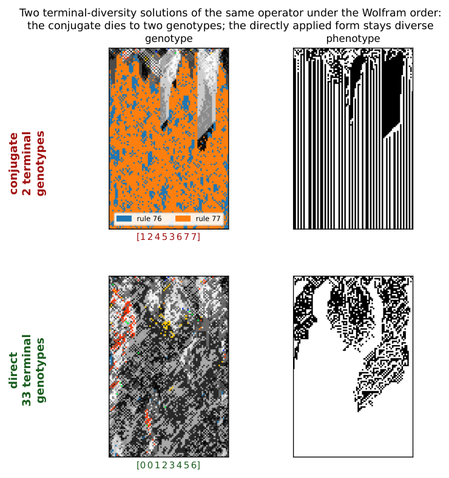
A cellular automaton normally evolves a field of states under one fixed rule. Here each cell also carries a rule, and local writes evolve that rule field alongside the phenotype. We display an elementary cellular automaton (ECA) rule in Wolfram order,
and index these displayed positions from left to right by . Thus position is the output and most significant bit, while position is the output and least significant bit. Throughout, the indices of , , , and are these displayed positions, not the binary values of the neighbourhoods. If is a numerical neighbourhood value, its rule output is therefore . (The 2015 implementation used the order ; permutations quoted from it are conjugated into the displayed order before being named — offset , and so on.)
We study the operator , parameterised by a permutation of the displayed positions. Writing the displayed byte as a map , the operator sends to defined by
| (1) |
Each output bit is one input bit, at the position moves it to, negated; is thus a permutation of the eight coordinates composed with a global complement. The truth table is thereby itself an eight-cell automaton whose wiring is and whose update is Boolean negation — an automaton inside the automaton. Equation (1) defines a family of operators that is finite, exhaustively enumerable, and, as we show below, exactly classified; Worked example 1 traces one member of the family bit by bit.Supplement 2, Definition 1: Writings, elementary writes, and propagators. Supplement 2, Observation 1: Permutations form a small bijective core. Supplement 2, Worked example 1: A simultaneous propagator by hand.
The simultaneous operator of Equation (1) acts on one eight-bit rule; the spatial experiments place its elementary writes---one truth-table coordinate at a time---inside a two-layer automaton whose cells hold rules as well as states.Supplement 2, Definition 2: Genotype and phenotype. Supplement 2, Worked example 2: One site, one complete MetaCA step. That substrate is not itself new (Corneli & Maclean 2015); what we study is the operator, understood as an enumerated, exactly classified family—the object §2§2Related Work: A New Operator Family Among Familiar Phenomena placed against its neighbours.
Figure 3 gives a first measured example of what the operator choice controls, and it is not a transient of the displayed horizon: under , Rule 110 holds a median of the genotype at step (six seeds, range –), with medians between and across lattice widths –, while under it is absent at the same horizon. These frequencies establish operator-dependent concentration on Rule 110 in the tested runs; they do not establish a general preference for computationally distinguished rules.
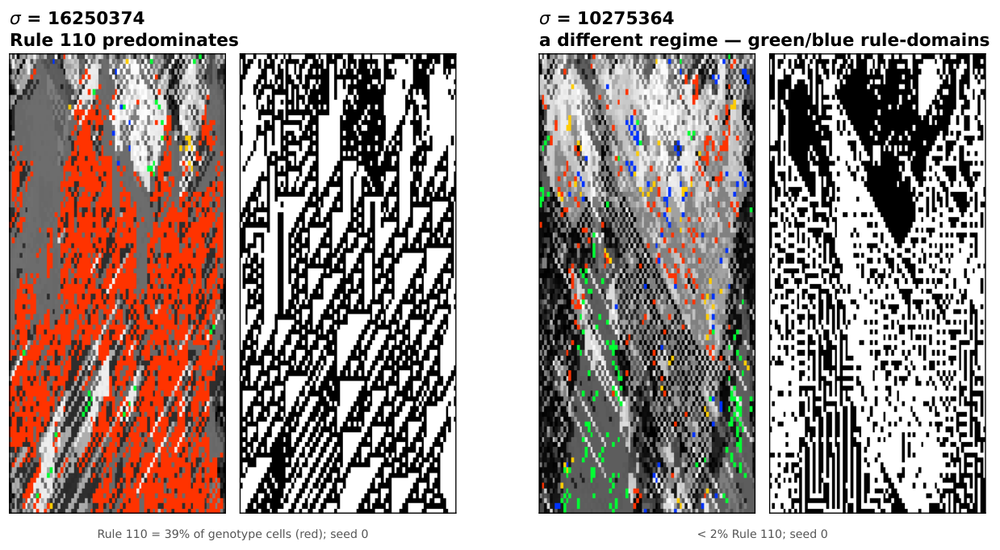
4 Fixed Rules Exist Exactly When Every Cycle Is Even
has a fixed rule if and only if every cycle of has even length; since a one-cycle is odd, this already forces to be fixed-point-free.Supplement 2, Theorem 1: Fixed points and even cycles.
A fixed rule is a invariant under (1), i.e. a -equivariant Boolean colouring with . Follow a cycle of length : equivariance forces , and is the identity exactly when is even; conversely, colour each orbit by the parity of its distance from a chosen representative. A one-cycle of () is odd and so admits no such colouring, which is why even cycles are required throughout.
Worked example 3 shows the theorem on the offset- operator. The same small calculation also makes the later count and forced balance visible before we state them generally.Supplement 2, Worked example 3: Even and odd cycles.
This is the signed-cycle fixed-point theorem of Boolean-network theory (Aracena 2008) specialised to (1): our operator is a Boolean network whose signed interaction digraph is with every arc negative, a negation-cycle of length has sign , and an isolated negative cycle admits no fixed point while a positive (even) one admits exactly two. We contribute a machine-checked proof of the specialised statement in Lean 4 / Mathlib.DarkTower/Patterns/Propagator.lean, theorem hasAlternatingColouring_iff_cycleType_even; lake build clean, no sorry or axiom.
4.1 All-even permutations are of
The number of with all cycles even is , with exponential generating function (the “set of even cycles” construction). For this is of , or . The count is classical: it is OEIS Foundation Inc. 2011 and appears as Stanley 1999 and in Riordan 1968. We claim it only as the enumeration of our operator family, not as a new identity.
4.2 Fixed bytes number
An all-even with cycles therefore has exactly fixed bytes, and any with an odd cycle has none.Supplement 2, Corollary 1: The count. Each even cycle admits exactly two alternating colourings, chosen independently across cycles, whence ; the zero case is Theorem 1. This too is machine-checked.alternatingColouring_card_eq_two_pow_cycleType_card. Summed against these weights the family is consistent: over all-even equals , the total number of fixed bytes across the family.
5 Every Fixed Point Is Balanced
Every fixed point of every operator in the family has exactly four one-bits—equivalently, Langton’s activity parameter is pinned at .Supplement 2, Theorem 2: Every fixed point is balanced.
By Theorem 1 each cycle has even length ; an alternating colouring assigns such a cycle exactly ones; summing over cycles gives .Supplement 2, Definition 3: Langton’s activity . Exhaustive enumeration confirms it: across all operators and all their fixed points, every one has Hamming weight four, with zero exceptions.Supplement 2, Observation 2: Balance is a truth-table property. The statement is machine-checked for .alternatingColouring_true_card_eq_four: the true-cells and false-cells are put in bijection by , forcing each to number four.
We are deliberate about the standing of this result. Langton’s critical value was obtained empirically, as a statistic over rule space (Langton 1990), and its status as an order parameter was contested: Mitchell et al. 1993 refuted Packard 1988’s specific genetic-algorithm clustering claim, not the definition of , which survived as one axis among others such as Wuensche’s (Wuensche 1999). There is a folklore intuition for why is special — binomial sampling variance is maximal there — and it is not ours; and it has been noted that alone does not fix a rule’s dynamical class, distinct classes coexisting at a single value (Sakai & Kanno 2002b). What Theorem 2 adds is narrower and firmer than any of these: under the complementation in (1) the value is forced as an algebraic matter, because any alternation-under-complement colouring is balanced by parity. We claim balance, exactly; any connection of that balance to dynamical behaviour we treat as interpretation, not as part of the theorem.
5.1 Many distinct survivors, one activity value
Under an all-even , the fixed points of —the rules it maps to themselves—number , where is the number of cycles of (§4§4Fixed Rules Exist Exactly When Every Cycle Is Even). In the spatial runs these are the rules onto which the field is observed to settle. Every one has (Theorem 2), so the observed terminal population is a cast of distinct rules—distinct truth tables—sharing a single activity.
The smallest nontrivial case of the count is a single cycle, : two survivors. The 2015 paper’s Figure 8 also exhibits a two-rule residual, but not an instance of this count: its writing is non-bijective (§3) and admits no fixed rule at all, so its residual is a hunt on a single unsettleable position rather than a pair of fixed points.
That die-off curve—the count of distinct rules present over time—is a natural population-level companion to . Where is a scalar assigned to a single rule, this curve is a property of the whole field’s trajectory; and where is uninformative here—every fixed point sits at —the curve still varies, because it measures the population rather than the point. We use it cautiously, as an observable rather than an established order parameter, to tell the rotations whose fields stay diverse from those whose fields collapse (§7§7Fixed Points Are Not Attractors, Figure S3.3).
The observed fields can therefore contain several distinct rules even though every fixed rule has the same activity value, . Terminal rule diversity and fixed-rule activity describe different properties of the field; the causal tests of §11§11Feedback Roughly Doubles How Far a Flip Travels examine whether either predicts perturbation reach.
5.2 A dead genotype can carry a live phenotype
The balanced shell is a definite object: exactly rules carry four active outputs, and by Theorem 2 the absorbing set of every operator in the family lies wholly inside it. Collapse is therefore not merely a loss of diversity but a fall onto this particular -rule balanced shell at .
Balance is necessary for a genotype to freeze and silent about what the frozen rule then does. Run each of the as an ordinary elementary CA and they split: are phenotypically live—sustained change under iteration, the additive rules , , and the class-IV rule among them—while the rest fall quiescent. The two halves share a single ; this is, inside our family and by construction rather than by survey, the coexistence of dynamical classes at one activity value that has long been urged against as an order parameter (Sakai & Kanno 2002b). A field can thus die in its genotype while the surviving rule keeps its phenotype in motion.
Figure 4 is such a field, built to specification. To seat a collapse on a chosen live rule it suffices to pair ’s four active positions with its four inactive ones as an involution: four transpositions, an all-even operator that holds among its fixed points (Theorem 1). Whether the field actually settles onto that fixed rule is a separate, dynamical question (as §7 stresses); here it does. Carried out for Rule this yields ; run from a random field it drives the genotype to near-uniformity—two rules survive—while the phenotype never settles. The field has died onto Rule , another live tenant of the same shell, whose additive dynamics keep the black-and-white panel full of structure. Genotypic death and phenotypic death are not the same event.
One caveat marks the open edge of this. An involution fixes not its target alone but the whole shell compatible with its pairing, and which tenant a random field actually reaches is set by the basins, not by the construction: we aimed at and the dynamics preferred . Existence is settled—live survivors are constructible—but steering a field onto a named rule is not.
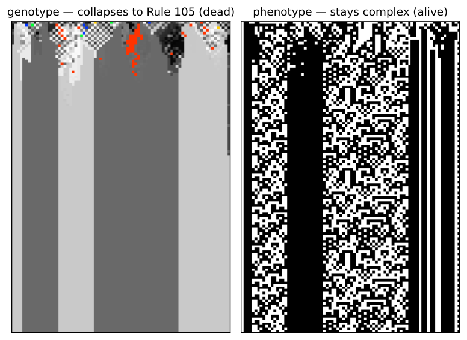
6 Odd-Cycle Operators All Live; All-Even Types Split
6.1 Fixed points make settling possible, not inevitable
Theorem 1–2 concern fixed bytes; the spatial dynamics adds stochastic elementary writes and, in the census, neighbour blending. In a neighbour-blend step, each truth-table coordinate of a cell’s rule is updated from the corresponding coordinates of the left, centre, and right rules: agreeing outer values are copied, while disagreement is resolved by applying the centre rule to that three-bit neighbourhood. Figure 5 shows why fixed-point existence is not itself a dynamical verdict: without blending, all-even rotate settles within the run while all-even rotate remains diverse; the odd-cycle examples, which lack fixed bytes, also remain diverse. The full census below (§6.3§6.3Collapse grows with the number of cycles) makes this quantitative over all operators (Table 2); the dynamical content is the death-rate difference between the classes, not the class sizes.
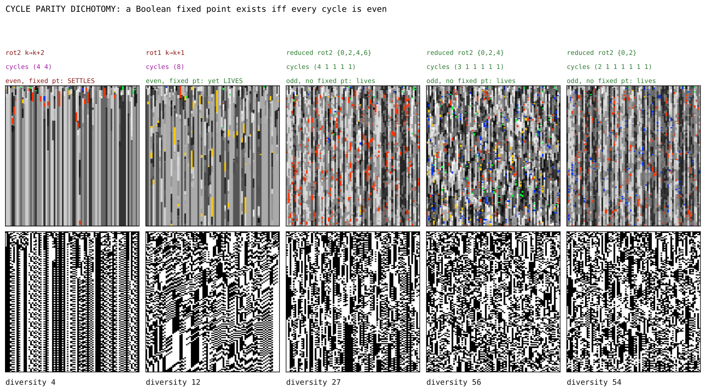
6.2 A prediction met: no fixed points, no die-off
To guard against reading structure into a completed enumeration, we fixed a prediction before running the case. The reduced operators act as a single even cycle on a subset of positions and leave the remaining positions as one-cycles; by that leftover they are not all-even, so by Theorem 1 they possess no fixed point and should fall on the no-fixed-points side of the dichotomy—no rule for the field to settle onto, and correspondingly less extinction. They do (Figure 5, right): they stay diverse rather than dying off. Absence of fixed points forbids settling onto a single rule; it does not forbid short-period behaviour, and we claim only the observed persistence of diversity, not literal aperiodicity.
6.3 Collapse grows with the number of cycles
The trend becomes an exhaustive finite-run observation once every operator is tabulated. Within the all-even class the specific permutation, not its cycle type alone, decides: two operators of identical two-4-cycle type reach opposite fates (Figure S3.4), so dynamical class cannot be read off cycle type---what the census quantifies is how each class splits.Supplement 2, Definition 4: Census protocol and aliveness. We ran all permutation-propagators and grouped them by cycle type (Table 2).Supplement 1, Box 1: The full permutation census.
| cycle type | count | genotype-alive |
|---|---|---|
| any type with an odd cycle (17 types) | ||
7 Fixed Points Are Not Attractors
Possessing a fixed point (Theorem 1) is not the same as reaching one, and does not by itself move a rule toward .Supplement 2, Worked example 4: Reading the rotation survey. Because complements every bit, : the operator reflects activity across , exactly preserving the distance rather than contracting toward it. And because is a bijection on bytes, a generic rule lies on a periodic orbit and simply cycles—its fixed points are fixed, but they are not attractors and have no basins. The only rules pinned at are the fixed points themselves. Attraction in the experiments therefore belongs to the stochastic elementary-write dynamics, with or without neighbour coupling, rather than to iteration of the simultaneous map .Supplement 1, Box 2: The rotation survey.
8 Alternating Two Collapsing Operators Sustains a Diverse Field
Everything so far has held one operator fixed for the length of a run. Relaxing that—alternating the elementary spatial updates of two operators from step to step, rather than composing them into a single map—turns out to be constructive rather than merely destructive, and it is the first place in the paper where a schedule does something neither of its constituents can.
Braiding two operators that each collapse alone can sustain the field.Supplement 2, Definition 5: Temporal braid. Supplement 1, Box 3: A braid of two collapsing operators can sustain the field. Figure 6 shows the case: offset (two 4-cycles) and offset (four 2-cycles) are each genotypically dead run on their own, and alive when braided. The schedule is also a usable control rather than a switch. Mixing a sustaining operator with a collapsing one in fixed proportion over a periodic twelve-step schedule moves late-window rule diversity smoothly with the mixing fraction (Figure S3.5), which is what later lets us treat diversity as a dial to be turned rather than a property a run happens to have.Supplement 1, Box 4: The mixing fraction is a reproducible diversity control.
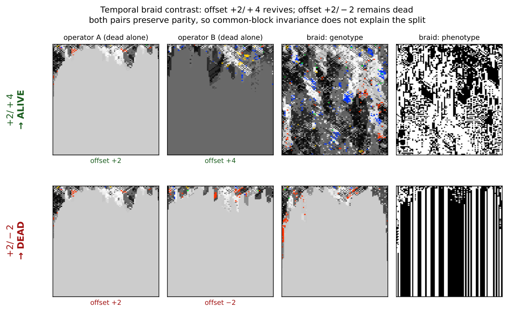
Each operator negates every bit, so under composition the flips cancel in pairs: a product of two is a pure coordinate permutation with no negation left.Supplement 2, Proposition 1: Composition parity.
Exploratory searches over products of two and three simultaneous propagators found no additional structural regime.Supplement 2, Definition 6: Interrupter. Algebraic composition is therefore closed in the sense of Proposition 1. Temporal braiding is a different operation: it alternates stochastic elementary writes inside the spatially coupled dynamics rather than replacing them by one composed map, retaining each intermediate coupled state, which is why the braids of §8§8Alternating Two Collapsing Operators Sustains a Diverse Field can produce dynamics absent from either held operator.Supplement 1, Box 5: The rotation split occurs with and without neighbour blending. The second constructive mechanism—pairing a propagator with a phenotype-reading step—is the subject of Part II.
9 A Broad Crossover and No Critical Point
The survey (Figure S3.1) exposes a sharp behavioural split within a family of provably fixed-point-bearing operators: only the single 8-cycles (offset , ) sustain a high-diversity phase, while offset and collapse. A reader is entitled to ask whether that phase sits at a critical point—tuned between an ordered and a disordered phase, as CA complexity is often supposed to (Langton 1990). This is the first of the two readings distinguished at the outset—an edge of chaos located in parameter space, at some value of a tunable control parameter---and the finite-size scan below is the test of it, the only place in this paper where that reading is put to the question. Supplement 1, Box 6: No finite-size evidence of a critical point over the tested range.
Figure 7 collects the four diagnostics. The scan is over the propagator fraction , from all blend at to all propagator at , at lattice widths to with seeds each; the point of varying is that a genuine transition sharpens as the system grows while a crossover does not. Genotype activity fits a logistic in at every size (), but the crossover width does not shrink over these sizes (). The size-scaled run-to-run spread , used here as a susceptibility proxy, does peak inside the crossover and grows about -fold, but its maximum wanders—from to and then to the sampled boundary for the two largest sizes—rather than settling. Finite-horizon collapse becomes rarer with size, and the Binder cumulant has no common crossing. Each diagnostic is individually consistent with a critical point; none of them locates one, and together they support a broad crossover instead.
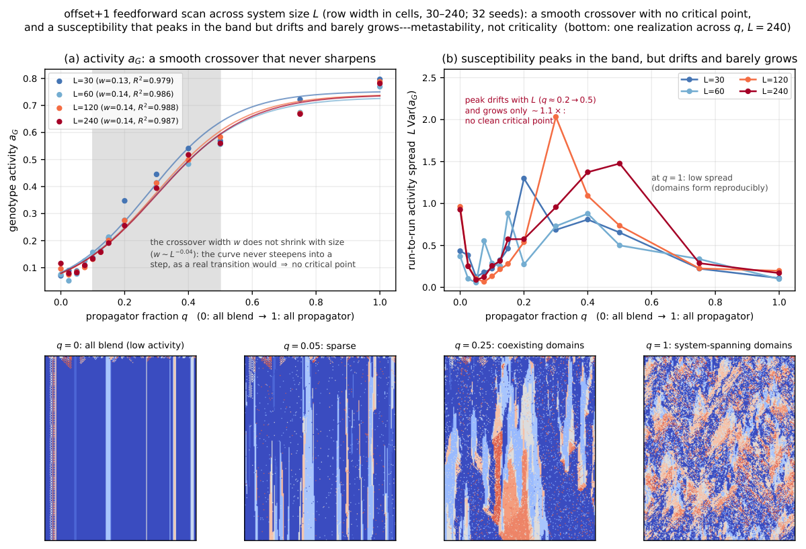
Part II Beyond the Permutation Core: Feedback and Causal Propagation
This part establishes the paper’s measurement and what it finds. The instrument: flip one cell, fork the run, and measure how far the difference between the two copies travels, calibrated against elementary rules of known behaviour. On that instrument, architectures whose rule updates read the current phenotype roughly double the reach of matched architectures that do not; a dial replacing a growing fraction of current readings with readings of a frozen copy—itself a real phenotype, so spatial statistics match at every setting—reduces reach smoothly; and sustained rule diversity, mutation, refuges, niches, and rule mobility leave reach unchanged, while a conservative transport that only moves rules from place to place raises it. What moves reach is current state information reaching the rule layer; diversity of the rules themselves is inert. The part closes by recovering the same ordering from an independent construction: a gate deciding locally when rewriting fires reproduces the prescribed-rate dial when blind to cell states, exceeds it when reading current states, and falls below it when reading a frozen field of matched statistics and firing rate.
Part I’s classified object and exhaustive census were the finite permutation core; its temporal braid was the boundary case, already replacing one held operator with a schedule. We now retain the same genotype–phenotype lattice and elementary rule semantics but drop the single-operator restriction. The objects in Part II are update architectures: time-dependent schedules, phenotype-conditioned writes, mutation and holding protocols, and conservative local transports. Some use writings from the family as components, but a state-dependent architecture is not itself one fixed writing. Consequently, the results below neither classify nor measure the family as a whole; they test how causal propagation changes when the genotype update can read the phenotype.
10 A Construction That Reads Its Own Phenotype Sustains Structured Phenotype
The phenotype-reading step begins from a four-bit context: the local three-cell phenotype neighbourhood before the update and the cell’s newly computed phenotype bit. From that context it constructs four ordered candidates: the observed four bits, their full complement, the observed bits with the second bit flipped, and the observed bits with the first, third and fourth bits flipped. At each truth-table position it compares the three rule bits supplied by the left, centre and right cells with the first three bits of those candidates; the fourth bit of the first match becomes the new rule bit, and an unmatched position takes the all-zero fallback. We call the composition of this step with the offset- propagator the river. Figure 8 shows a representative run at : alternating phenotype domains branch, merge and reorganise for the length of the run rather than resolving to a homogeneous or short-period field, whereas the bare rotations collapse or cycle.Supplement 2, Definition 7: River. Supplement 1, Box 7: The river sustains structured phenotype.
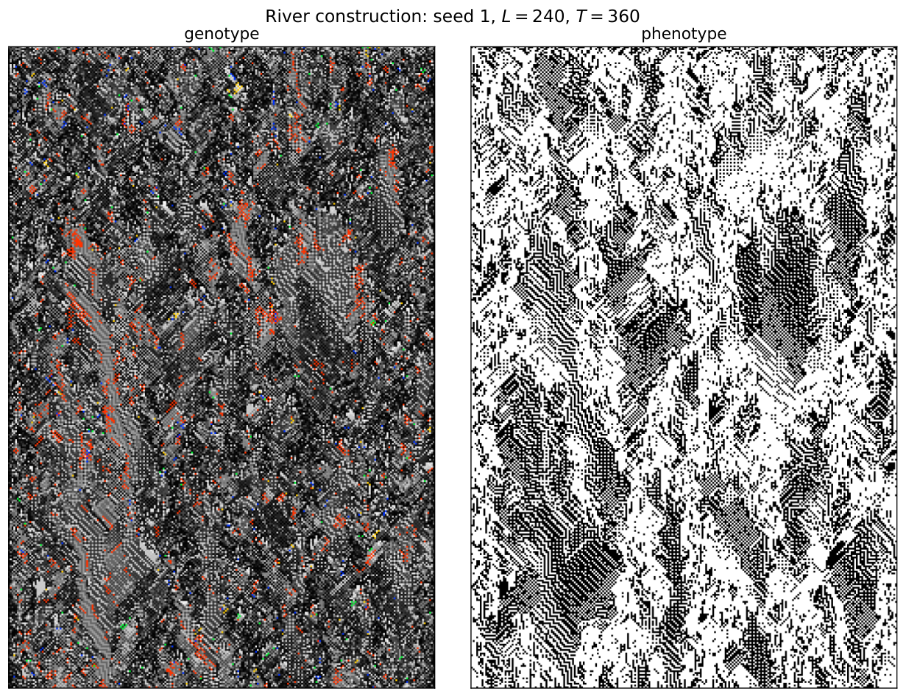
11 Feedback Roughly Doubles How Far a Flip Travels
Two measures were tried before the causal one and neither separated the regimes. A normalised compression distance on the rule field tracks how many distinct rules are present rather than how they are arranged, and a block-entropy estimate over the phenotype is dominated by the same quantity. Both therefore report diversity, which §11.2§11.2Transport moves reach; diversity does not shows is not the coordinate that governs propagation. That failure is what motivates measuring a perturbation directly rather than summarising a field.
A causal test also avoids a general problem with observational regions. Any statistic computed over a region drawn from the field it is computed on invites circularity, and no null defined only by moving that region can necessarily detect it. We therefore stop drawing regions: perturb one cell and ask where the effect arrives.
We run the phenotype-reading construction of §10§10A Construction That Reads Its Own Phenotype Sustains Structured Phenotype to , fork, flip a single phenotype bit at site , and continue both branches to , recording which cells differ. The fork is exact: the construction draws one pseudo-random position per cell per step, so re-running from the same seed gives both branches an identical tape and every divergence is the causal consequence of the flip. The control is the matched feedback-off variant—same seed, tape, construction and initial state, with only the live phenotype-to-genotype edge cut. Figure S3.6 sweeps the flip over all sites and records damage at a sequence of horizons.Supplement 1, Box 8: Phenotype-to-genotype feedback roughly doubles causal reach.
A glider carries a fixed-width packet at constant velocity; a conductive medium disperses. Tracking the damage centroid distinguishes them, and the reference values must be measured rather than assumed—elementary rule , whose gliders support universal computation, does not give a fixed packet under a random single-site perturbation, because the perturbation creates and destroys gliders which then collide.Supplement 1, Box 9: Causal reach on a scale calibrated against elementary rules. Supplement 1, Box 10: The order parameter is the strength of the phenotype-to-genotype coupling.
Figure 9 places every construction on that one axis. All points share the protocol of Supplement 1, Box 9, and the calibration reproduces rules , and exactly against it, so the reference values drawn from the elementary rules carry over unchanged. The rows split the constructions by coupling rather than by provenance, and the split is clean. Nothing whose genotype update is blind to the phenotype clears rule —not even the ungated transport controls, which are fully mobile and merely cannot see what they are moving through. Everything that reads the phenotype lands inside. The river composition defined in §10 appears in both rows: its reach is when the genotype update reads the live phenotype and in the matched control without that live edge. The arrow therefore compares one construction with and without the measured causal connection.
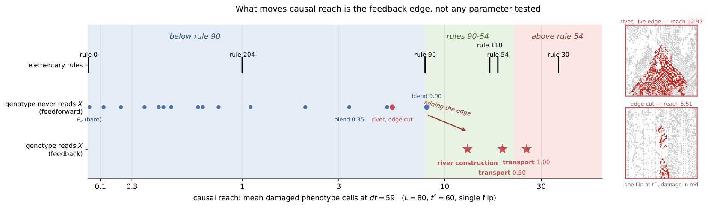
The same sweep also gives the growth of the damage cone and the displacement of its centroid (Figure S3.7); we report those exponents descriptively and draw no inference from them about gliders or particles.
The reach scale separates propagating from non-propagating responses: frozen rules return exactly zero. It is not a regime coordinate. Wolfram class III rules bracket the measured range—rule at and rule at —with the class IV rules and between them, so position on this axis does not classify a system as ordered, complex or chaotic. What the comparison supports is narrower: on the same fork-and-flip measure, allowing the river’s genotype update to read the live phenotype changes reach from to . Because the protocol draws no observational region, that comparison does not depend on selecting a region from the field being measured.
11.1 Reach is monotone in the coupling gain
Treating that coupling as present or absent understates it. In both constructions that read the phenotype it is a quantity, and causal reach is a graded, monotone function of it.Supplement 1, Box 11: Coupling is a dial, not a switch, and reach is monotone along it.
For conservative transport the gain is the phenotype-gated swap rate; reach crosses rule between rates and and saturates past . For the river it is the currency of the phenotype bits the genotype reads: each cell at each step reads the live phenotype with probability and a frozen reference otherwise, so is the fraction of the genotype’s view that is causally current. Because the frozen field is itself a real phenotype, marginals and spatial structure are matched at every and only causal currency varies; because reproduces the live river exactly, the dial is anchored against a measurement made independently of it.
The two frozen conditions capture their reference fields at different times. For the dial, one phenotype field is captured before the fork and supplied unchanged to both branches; at , neither branch’s genotype update can read the flipped bit, and reach is . The ablated control instead captures a separate frozen field at the start of each post-fork continuation, after the perturbation has been applied. Its perturbed branch therefore reads a static field containing the flip while its unperturbed branch reads a static field without it, and reach is . Thus removes temporal updating but retains a branch-specific static difference, whereas removes current phenotype information from the comparison; the full measured span is to .
And the two dials have opposite curvature (Figure 10). Transport is concave and buys most of its reach early; the river is convex, with % of its span in the last eighth of , so one stale read in eight costs % of the reach. Monotonicity in the coupling is thus common to both constructions while its shape is not, and we would not generalise the shape from two cases.
11.2 Transport moves reach; diversity does not
That cannot discriminate among the fixed points is Theorem 2’s point (§5§5Every Fixed Point Is Balanced); nor can it be rescued by computing it on the realized dynamics. Across the nine configurations of Figure S3.2 the empirical neighbourhood distribution is close to uniform—normalised visitation entropy to , all eight neighbourhoods visited in every run—so read off the realized transitions ( to uniform-weighted, to visitation-weighted) sits near wherever the nominal value does. The sustained distinct-rule count can discriminate, and the causal measure above lets us ask the stronger question: does causal reach depend on diversity itself, or on the mechanism used to sustain it?
Our initial survey varied sustained diversity by seven mechanisms that share little: the bare operator family; braided writings; the fork time after seeding the genotype with a randomised full rule population; a continuous blend strength; random rule mutation; asynchronous refuges that hold a cell’s rule exactly with some probability; and spatially phase-shifted braid niches. A limiting case anchors the top of the range: a genotype held fixed at the full population has maximal diversity and no rewriting at all. The coordinate throughout is diversity sustained through the response window, not diversity at the instant of the fork—a field seeded with all rules holds them for one step and collapses during the very window the damage is measured in.Supplement 1, Box 12: Sustained diversity does not determine causal reach; conservative transport breaks the apparent interior optimum.
Figure 11 shows why the apparent optimum was an artefact. The original configurations trace a rise and fall against sustained diversity, but every point on the descending limb obtains its diversity either by replacement mutation or by holding rules still, so the descent measures those two mechanisms rather than diversity. The conservative runs, which hold the rule histogram exactly invariant while varying transport, separate into flat bands — one per transport rate — that span the whole diversity axis. Reading across a band shows the effect of diversity at fixed transport and finds almost none; reading between bands shows the effect of transport and finds an order of magnitude.
Two cautions bound this result. First, the conservative intervention is a local transposition, rather than the one-bit, one-site intervention of the original survey. Normalising by initial damage puts their amplification on a common scale, but the conservative curves are a falsification control, not a claim that their absolute heights rank all mechanisms. Second, phenotype-gated bijective exchange is one deliberately constructed transport law, tested at one lattice width and one response horizon. It establishes existence: fields can remain mobile and propagate damage without mutation at sustained diversities above distinct rules—the highest diversity any mechanism of the original survey reaches without replacement mutation or a held genotype (Figure 11, grey band; Supplement 1, Box 12). It does not establish that transport rate is a universal order parameter.
The defensible conclusion is narrower and cleaner. Distinct-rule diversity describes population persistence in the Part I operator experiments, but it does not govern causal reach across the Part II architectures. The latter depends on how rewriting or transport is organised. Identifying a coordinate that captures that organisation across mechanisms is work for another paper; the classification of §4 guarantees only that cannot discriminate among fixed points in the permutation core.
11.3 The live read is determinative, not a tiebreak
One measurement bounds how the convexity of §11.1§11.1Reach is monotone in the coupling gain should be read. Asking, per cell and step, whether the live phenotype context selects a different rule than a frozen context would: it does in % of cell-steps (and in % against no context), over four seeds at for steps. The construction’s first-match runs over four candidates, so an uninformative re-selection would differ in about % of cases: at % a frozen context carries almost no information about the live answer. The read is determinative rather than a tiebreak, which is what a convex gain curve should lead one to expect, and it means there is no common case that a phenotype-blind rule could encode in its place. We draw no stronger conclusion from this than that: whether any blind construction could match the river is a question about a search we have not run, and Supplement 1, Box 8 reports only that the sixteen tested ones do not.
12 A Gate Reading Current States Raises Reach; Reading a Frozen Field Lowers It
A conditional composition applies one operator where a local predicate holds and another where it does not. Throughout this section the pair is conservative transport at unit rate ( on the §11 calibration) and holding (); the predicate decides cell by cell, and its firing fraction is measured from the run. The gain-dial disciplines of §11.1 carry over: the transport stream advances whether or not the gate fires, and predicate randomness is re-seeded identically in both branches of a damage fork.
A gate firing at a prescribed rate, blind to the phenotype, is described across six rates spanning to by a line through the holding value,
| (2) |
with : a blind conditional composition is exactly a gain dial, its duty cycle playing the role plays in §11.1. Letting the condition read the phenotype changes that. Writing for the condition that at least cells of the centred circular -cell phenotype neighbourhood agree with the centre, thirteen such gates spanning widths all exceed Equation (2) at their own measured firing fraction; the widest, , reaches while firing on only of opportunities—above unit-rate transport’s own .
Width, however, is also the spatial correlation length of the firing pattern (neighbouring decisions share inputs), and correlated firing of a transport operator composes adjacent swaps into longer-range movement on its own. The frozen gate rules that reading out: the identical predicate applied to the phenotype as it stood at —same width, same spatial statistics, a real phenotype field—falls below the blind line in all seven matched pairs, by cells against its live counterpart on average, though it fires more often in six of the seven. A blind condition reproduces the dial; a current-reading condition exceeds it; a stale-reading condition of matched statistics falls below it (Figure 12).
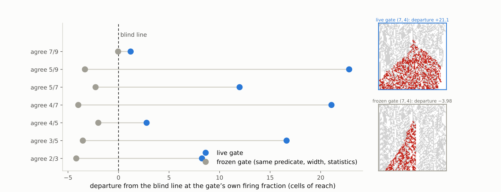
Part III Exotypes
In Part II the gain of the phenotype-to-genotype loop is a parameter we set, and the gate of §12§12A Gate Reading Current States Raises Reach; Reading a Frozen Field Lowers It made the firing condition a function of the lattice while the operator remained a property of the run. This part takes the remaining step: the operator itself becomes a property of the cell.
Its findings, in order. When the operator becomes per-cell state, adopted between neighbours under a selection rule, three outcomes occur at the tested parameters: the changing phase (sites whose phenotypes continue to update) eliminates the frozen phase (sites whose phenotypes remain unchanged for fifteen steps), the frozen phase takes over, or the two persist together for the full horizon. No locally computable quantity we tested ranks operators well enough to find the third outcome from within a run. A local intervention built to protect it—cells in uniform surroundings copying operators from phase boundaries—accelerates the freezing instead. Undirected noise does prevent freezing, but what it holds looks different: a foam of small frozen islands amid changing surroundings (Figure 16), against the extended frozen and changing regions of the found configuration (Figure 14); the measured difference is frozen fraction, against . Finally, with adoption switched off, none of thirty control runs freezes or dies: the frozen endpoints are an effect of the adoption rule at high precision, not of the lattice underneath. Two probes directed by the literature sharpen both findings: the freeze is nucleation-limited (an established frozen domain invades, yet the frozen phase never arises from developed churn), and a one-sided rule that writes only into long-settled cells holds a mixed state at a sixth of the dose of its randomly placed control — placement carries information after all, once the trigger is one-sided.
13 The Gate Sets the Timing of Rewrites; the Exotype Sets Their Content
The gate of §12 chooses when an operator fires. It does not choose which: there the pair of constituents is fixed, and the predicate selects between them; the permutation supplying the rewriting is a property of the run. Each cell carries its own propagator, drawn from a small named vocabulary and transmitted between neighbours, so the operator acting at a site becomes part of the local state.
Whether such a lattice can find its own operating point, using only quantities available to it at runtime, is the question the remainder of the part answers. The instrument behind every measurement so far—causal reach, computed by forking the run and perturbing a twin—is not such a quantity: no system can fork itself, and reach measures causal propagation rather than dynamical regime, so it would not by itself say where the system should arrive.
14 The Exotype Is a Structured Mutation Operator
An exotype is a per-cell assignment of a propagator. The vocabulary is a set of named permutations ; the grid holds one name per site; and the names are transmitted between neighbouring sites by a local policy. Nothing in the vocabulary is new to this paper—each name denotes a member of the family Equation (1) defines—but the assignment is new, because has until now been a property of a run rather than of a cell.
The transition is one elementary write. At a site whose genotype is the eight-bit rule , with the propagator the site currently carries, a coordinate is drawn uniformly at each step and
| (3) |
with unchanged elsewhere. Comparing this with §3: the simultaneous operator applies Equation (3) at all eight coordinates at once, and the spatial experiments of Part I place its elementary writes inside the two-layer automaton. The exotype layer is that same elementary write, drawn one coordinate at a time, with read from the cell rather than from the run.
Three properties matter for what follows. The exotype edits the rule, not how the rule is applied: selects a write address inside the genotype, and the term propagator (Part I) names this movement of bits through the truth table, not any propagation of phenotype state. When is the identity the transition is a point mutation; for every other the read and write addresses differ, so the operation transfers inverted information from one truth-table entry to another—a locally varying, structured mutation operator whose bias is which bit is rewritten from which. And it fires at every applied site at every step: the ordinary path, not a rare perturbation. The exotype grid persists across steps and is transmitted between sites—inheritance of an acquired modifier, in the sense that a Baldwin-style argument requires.
The implemented vocabulary is twelve named members of the -member family. Part I audits it exactly: the theorem predicts, without any dynamical measurement, how many rules each member cannot alter, and the prediction agrees in all fourteen implemented cases, including two controls that are defined but not selectable—an audit of the vocabulary, not a premise of any result below. The twelve span both cycle parities and both ends of the fixed-point count, which makes the layer’s behaviour attributable to the exotype mechanism rather than to a degenerate choice of operator. The boundary this small sample places on the part’s claims is stated with the other limits in 18 Limits.
15 Three Outcomes: The Changing Phase Wins, the Frozen Phase Wins, or Neither Does
Supplement 4 records a search over two parameters of the selection rule: the policy precision , which controls how strongly selection concentrates on the lowest-scoring candidate, and epistemic weight , which scales the information-seeking term relative to the goal-directed term. The search was not endogenous—the apparatus varied the parameters and scored the runs from outside, and the examples below were located with it operated interactively, under manual selection among its outputs. (One of its results bears on what follows: two runtime-computable observables, halting share and change rate, predict the intrinsic local-compressibility objective well, held out, and damage reach not at all, .) What the search produced is a map: on the surface the region of non-zero values of the 250-step search objective is an L-shaped ridge, one arm at low precision, the other at low epistemic weight, and the three configurations reported below sit on it — what a working search would have been expected to return. They establish that the targets of such a search exist in this substrate; whether the substrate can find them is the question the last two sections take up.
All three are measured the same way and by a criterion the search never used. Write a site as frozen at time if its phenotype has been unchanged for the preceding fifteen steps, and live otherwise. A run is absorbing if it reaches a configuration it does not leave again for the remainder of the run. These are properties of a single trajectory, requiring no twin run and no external reference; the horizon is the only free choice, and we report it with every number.
15.1 At low precision, the changing phase eliminates every frozen region
At low the lattice is live and stays live (Figure 13). At , the frozen fraction settles at and remains there through steps, on both seeds; the same holds at , and at for . No run in this group reaches an absorbing state.
The mechanism is not that frozen regions fail to form. They form and are then eaten. Over the first three measurement bands at , the number of frozen domains holds at ten while their mean width collapses from cells to and then to zero. A constant count with falling width is boundary retreat: every domain loses territory from both edges at once. Interior dissolution would look different — holes opening inside frozen regions would raise the domain count by fragmentation — and the count never rises. Live territory invades frozen territory at every boundary simultaneously, and there is nothing left at the end.
15.2 At high precision, the frozen phase takes over the lattice
At high and low the same contest runs the other way, and the losing side puts up a fight worth describing. At , the lattice carries a dense branching structure through a field of static stripes, fragmenting the frozen field as it goes: the frozen domain count rises from fifteen to twenty-two over the second measurement band, which is live territory cutting frozen territory into pieces. It then loses. The pieces merge, the count falls to two domains of width , and at the configuration stops changing and does not change again before the run ends. Every subsequent row is byte-identical; the final pattern has density , so this is a frozen pattern rather than a blank sheet.
The second seed absorbs at , and absorbs at and . The outcome is seed-robust and the timing is not: absorption time varies by more than a factor of two at fixed parameters, so differences of that size between neighbouring carry no information.
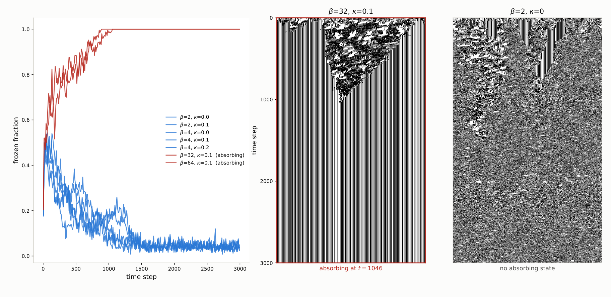
The two are the same kind of object—both carry coherent propagating structure and sustained genotype diversity, differing in which phase wins—and the search objective ranks them the wrong way round — for the arm that dies against for the arm that lives. Across the seven configurations run to steps on two seeds the separation is perfect and inverted: every configuration that reaches an absorbing state scored higher than every configuration that does not.
15.3 At intermediate precision, both phases persist for ten thousand steps
Between the two arms the objective falls to its minimum, and it is there that the most interesting configuration sits. Bisecting between the arms at locates the crossing between them: , and all absorb, at , and ; and do not.
At , , one realisation sustains an intermediate state for as long as we have run it. Across three windows spanning steps the frozen fraction reads , and — neither collapsing to the live-arm value of nor climbing toward one — with distinct frozen regions still forming and dissolving at and no absorbing state at any point. The frozen phase is fine-grained and in continuous turnover: as spacetime connected components the regions have a median lifetime of steps and a median width of cells, and the largest reaches an area of only , so no region coarsens into a permanent continent within the observed horizon.
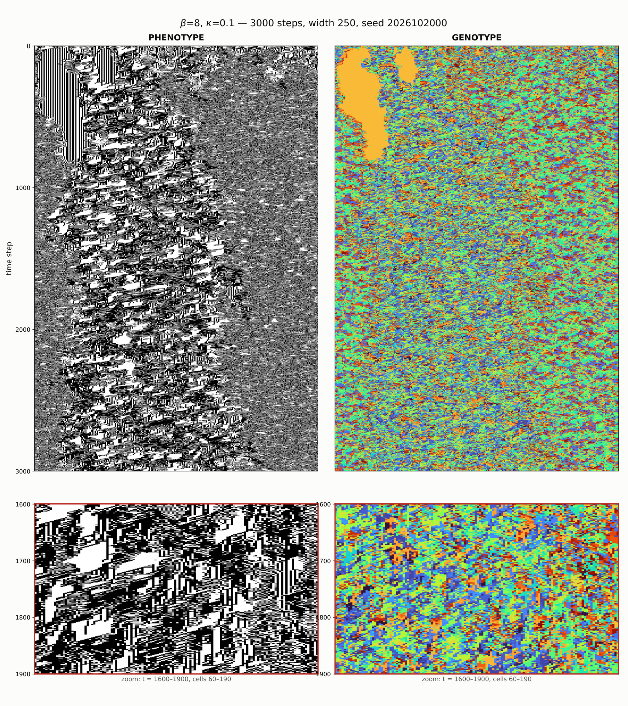
This configuration is the edge of chaos that the paper’s opening example first showed: frozen and moving structure coexisting, neither absorbing the other—the thing such a search would have been built to find. It is also the one the objective ranks eighth of thirty-five, at , below both arms of its own ridge.
15.4 The parameters do not determine which phase wins
The honest description of this region is not that neither phase wins. It is that the parameters do not determine which phase wins. The second seed at loses its frozen phase entirely, reading , and across the same three windows. At the two seeds reach opposite outcomes: one sheds its frozen phase to , the other freezes completely and absorbs at . Widening the lattice to cells changes the answer again, and since that run also extended the horizon we cannot attribute the change to width alone.
Realisation-to-realisation variance dominating a parameter’s effect is what a critical region looks like, and we report it as that rather than as a regime. What the three examples establish is that this substrate contains configurations of all three kinds — one phase winning, the other winning, and neither winning within the horizon we can afford — and that they are separated by a bisectable boundary in . What they do not establish is a critical point, which would require the intermediate behaviour to be a property of the parameters rather than of the draw, and we have evidence against that at the two points tested.
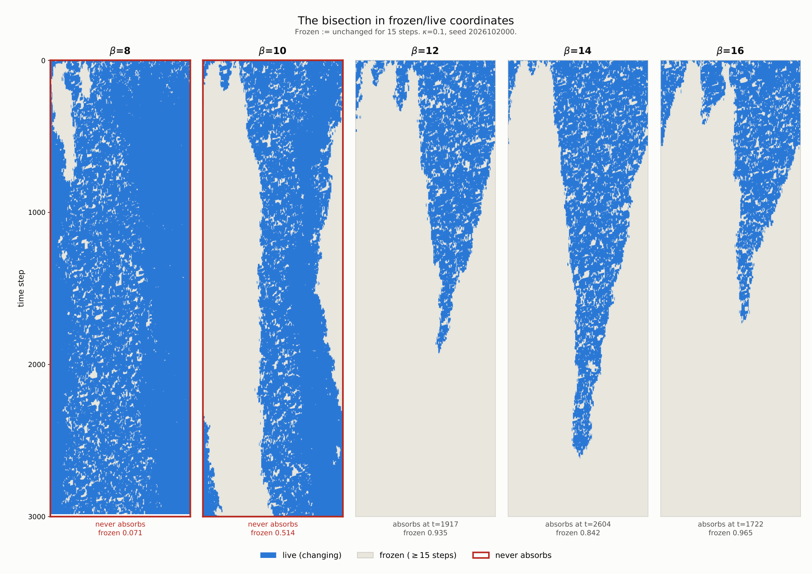
One methodological point generalises beyond these three examples and dictates the section’s use of persistence, rather than a short-window score, as its measure. Every configuration reported here was present in the thirty-five-configuration parameter sweep reported in Supplement 4 and was scored there over a -step window. At that horizon the example in the valley is unremarkable and the arm that dies looks best. The behaviour that separates them — absorption at , turnover sustained past — occurs entirely outside the window in which the objective was computed. An instrument validated on -step reference automata can be measuring a transient in a system whose transients run four times longer.
16 No Tested Local Quantity Finds Coexistence, and the Policy Creates the Absorbing States
Four deterministic measurements close the question posed in §13§13The Gate Sets the Timing of Rewrites; the Exotype Sets Their Content. It separates into two parts—whether a cell can decide from its own observations where the system should operate (search), and whether a local rule can keep it there once placed (holding)—and both parts close negatively.
The search half was external. The search that located the examples is described in Supplement 4: it swept a thirty-five-cell grid over the selection rule’s two parameters at four seeds per cell, scored each run after the fact, moved over the resulting surface under a learned surrogate, and restarted after every absorbed probe. None of those operations is available to a cell inside a run, and the information they produce arrives once per run rather than once per update decision. The local substitute a within-run search would need—a cell ranking two operators by a windowed observation of its own neighbourhood—fails at every window length: across eight seeds of the fixed-operator lattice the probability of a correct pairwise ranking peaks at and decays as the window grows, and the comparison a cell can actually make, against its own neighbour, never exceeds .
The mechanism is a timescale mismatch. The frozen field—using the preceding section’s definition, a site is frozen after fifteen unchanged phenotype steps—decorrelates at a site in about six steps, less than half the window that gives the observable its discriminative power, so integration pools evidence across contexts that no longer obtain—a fast decision fails by variance, a slow one by staleness, and no decision rate exists at which feedback through a temporally integrated detector works. The run-level result—that halting share and change rate predict local compressibility with held-out —is unchanged; what fails is per-decision use.
The holding half is also negative within this family, with a reversal (Figure 16). The natural local mechanism—let cells that sit in a pure neighbourhood, all frozen or all live, copy the operator of a cell at a phase boundary, so that the mixed condition invades the pure—was run at , the arm of the ridge that freezes solid. It froze on all six seeds, and on five of the six earlier than the unmodified policy, by steps on average: at high precision the operators found at boundaries are the freeze front’s own, so boundary-directed copying accelerates the phase it was built to resist. For the random-write intervention, each cell receives a fixed intervention interval sampled uniformly from 15 to 25 steps and a random phase offset; we call that interval its dwell. When the interval elapses while the cell is in a pure neighbourhood, the cell receives one random operator write. This prevents absorption on all six seeds, but so does the same number of writes applied to uniformly random cells, to within seed noise, so the placement carries nothing. What either preserves is a foam: small frozen islands, median width with the majority at two cells or fewer, surrounded by changing sites, at a frozen fraction near against the valley configuration’s at the same seed. Whether that state differs from the valley configuration in structure is not settled by the statistics we computed: the coarse connected regions visible in Figure 14 are a property of its spacetime components, and under the per-step run-width statistic used here the valley runs measure median – as well. Undirected rule noise keeps this lattice alive; we do not claim it keeps it at, or away from, the found configuration. A complementary intervention targets the phase-boundary cells instead (Figure 16, bottom row): at matched dose its outcome is indistinguishable from its count-matched random-placement control, and at low dose it drives the lattice to a near-frozen state threaded by one persistent changing seam — the write rate, not the placement, sets the outcome.
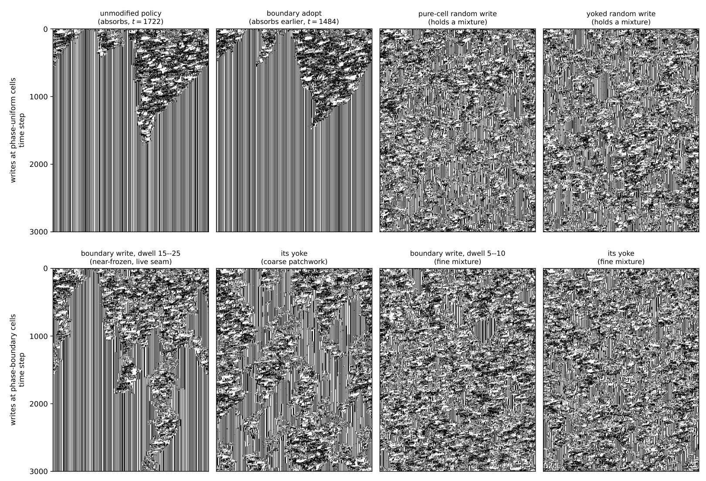
A control changes what the question presupposes. In the first no-adoption control, six runs use the same initial conditions as the six absorbing runs above, but the randomly assigned operators remain fixed; none freezes solid or dies out, and their frozen fractions remain between and through the full horizon. In a second no-adoption control at width , all twenty-four runs likewise retain both changing and frozen sites, including runs begun from a deliberately frozen-leaning state. Within the tested configuration family, then, freezing solid is an effect of the adoption rule at high precision, not a behaviour of the lattice underneath: switch adoption off and the same lattices, from the same starting points, hold a mixture through the full horizon. The bisection that located the examples sits at a different level entirely—it varied the rule’s precision from outside, between runs, and acted within none of them; it was a search tool, and this control is what separates what it found from what the rule it varied does at its extreme setting. Two boundaries on this statement matter. First, its scope is thirty runs, two geometries, and one vocabulary of twelve operators; it is not a claim about rule-rewriting lattices generally. Second, the uncontrolled state has not been shown to match the found configuration in structure—the statistic that would separate or identify them is not among those we computed. What the control establishes is narrower: in this family, absorption is a property of running the selection policy at high precision, not of the substrate the policy acts on.
17 Two Probes from the Literature: the Freeze Is Nucleation-Limited, and a One-Sided Rule Holds a Mixture
The related-work audit left two readings of Part III open, and both are directly testable. First, when a substrate co-evolves with the state on it, a continuous absorbing transition classically becomes first order, with bistability and hysteresis (Gross et al. 2006)—a reading on which the freezing of §16§16No Tested Local Quantity Finds Coexistence, and the Policy Creates the Absorbing States is one branch of a bistable pair rather than the endpoint of a crossover. Second, the one local design class our interventions did not test is the asymmetric rule of Droste et al. 2013: tentative while no information is available, decisive on one-sided evidence.
The first reading is supported, in a specific form: the freeze is nucleation-limited. An adiabatic sweep of upward through the freezing regime and back ( steps per plateau, six seeds) produced no freezing at any up to once the lattice had developed live churn, and an extended dwell— steps at , six times the cold-start absorption time—produced none either: transient settled islands stayed below of the lattice and dissolved. Yet the same dynamics from a cold start absorbs by (the pipeline reproduces §16’s pinned-seed absorption to within one step), and an established frozen phase wins: a lattice spliced half-and-half from an absorbed donor run and a churning donor run, restarted at with nothing done at the seam, was fully absorbed by the frozen half in five of six seeds within steps. The frozen phase invades any front it holds but cannot arise from churn at these horizons: two macrostates persist at identical parameters, selected by the initial condition, with a critical nucleus somewhere between the largest transient island ( cells) and the spliced domain ( cells). This is the bistable phenomenology the co-evolving-substrate literature predicts, and it scopes the crossover result of Part I in the direction that literature warns: at tested sizes, absence of a critical point and a nucleation-limited first-order transition are not distinguishable.
The second reading is also confirmed, and it rescopes one sentence of §16. A cell whose phenotype has been unchanged for steps is one-sided evidence of the frozen phase—live cells occur in both macrostates and certify nothing. A rule that takes one random vocabulary write at exactly such cells (refractory steps; nothing done anywhere else) prevents absorption on all six seeds at using writes per step across the lattice; its count-matched control, the same closed-loop write budget at uniformly random cells, needs times the dose and still carries three times the frozen mass. Placement therefore carries information once the trigger is one-sided; the earlier finding that “the placement carries nothing” is a fact about blind and cadence-triggered writes, not about local intervention as such. The scope of the positive is equally sharp: what the one-sided rule holds is a foam finer than the noise arms’ (median frozen-run width ; three-quarters of runs at two cells or fewer; frozen fraction ), not the found configuration’s extended regions. The negative that stands is unchanged in kind but now exactly bounded: no tested local quantity finds the coexistence condition, and no tested intervention—symmetric, blind, or one-sided—recovers the found configuration. What fell was only the claim that local placement cannot matter.
Discussion
18 Limits
The Part I theorems are exact for the Boolean permutation core; its dynamical claims are narrower and empirical. The census uses three seeds per operator, the rotation survey two, and the finite-size scan per parameter cell, all under the stated radius-one spatial protocol. These finite-run results do not turn fixed-point balance into a claim about attraction. The substrate itself is not new (§3), and is one heuristic among several (Wuensche 1999); what is exact is only that the fixed-point structure of Equation (1) forces every fixed rule in the core to have .
Part II has different limits because it has a different object. Its central causal comparison concerns one feedback-coupled construction rather than either writing family, one lattice width, and six seeds. The descriptive exponents are fitted over a range where damage width reaches only a tenth of the lattice, so finite-size effects are not excluded. The architecture survey and conservative-transport control compare mechanisms rather than exhaustively sampling writings, and their fixed sample sizes are stated with each result. They identify feedback and transport as controls in the tested constructions, not as universal order parameters. The closing gate comparison uses one pair of constituents, one predicate family, and sixteen seeds per row; a blind gate with matched correlation length would separate current information from firing geometry, which the present frozen control leaves entangled with a firing-fraction mismatch of up to . Illustrative diagrams use pinned representative seeds. All reported computations are reproducible from the accompanying package.
The Part III results are bounded in three ways, each naming the experiment that would extend it. Breadth: the exotype configurations sit at one arbitrarily placed point of the -member design space—twelve operators, selected neither to test a hypothesis nor to cover the family, varied by no experiment; this is the most consequential limitation of the work—with two seeds per parameter point—and those seeds disagree at two points, so the region is reported without a critical point and with evidence against one where tested; the closing measurements use six to eight seeds at one geometry and one . Varying along Part I’s classification axes, and widening the seed sets, are the direct extensions. Identified confounds: the width- persistence comparison changed lattice width and duration together, so its outcome attributes to neither; and the yoked controls match override counts dynamically against their own lattice, so realized doses can diverge between an arm and its yoke. Each names a control that has not been run, not a flaw in one that has. Horizon: all persistence claims are bounded by the horizons actually run.
19 Conclusion
The paper has studied four related objects, and its conclusions must keep them separate: permutation-propagators, update architectures, conditional compositions, and per-cell exotype systems. Part I concerns the finite permutation core. Its static results are exact: a permutation-propagator possesses fixed rules exactly when all cycles are even; an all-even permutation with cycles has fixed rules; and every such rule is balanced, with . Its dynamical results are finite-run observations over that core. The exhaustive census shows that all odd-cycle operators remain genotype-alive under the stated protocol while every all-even cycle type contains both sustaining and collapsing members. The rotation survey and finite-size scan sharpen the distinction: fixed-point existence does not determine attraction, and the tested propagator-fraction scan gives a broad crossover rather than evidence of a critical point.
Part II retains the two-layer lattice but changes the object from an individual writing to an update architecture. The river construction composes a permutation-propagator with a phenotype-reading step; the wider comparison adds temporal schedules, mutation, holding, niches, and conservative local transport. These are not a census of the writings, and the results do not retroactively characterise the core. They establish a narrower causal claim. Against a matched feedback-off control, phenotype-to-genotype feedback roughly doubles the reach of a single-cell perturbation. When the strength of that feedback is varied, reach changes monotonically, while a control matched in rule mobility but blind to the phenotype remains in the low-reach band. Conservative transport further shows that sustained genotype diversity is not itself the governing coordinate: high diversity can coexist with propagation, and transport changes reach far more than diversity does.
The connection between the parts is argumentative rather than theorem-to-theorem. Part I proves that the classical coordinate cannot discriminate among fixed points in the permutation core and finds no critical point in the tested parameter scan. Part II asks what a causal measurement can reveal once the architecture itself is allowed to change. Its answer is feedback coupling for the constructions tested here, not a theorem about all permutations or all writings.
This admits a reading the substrate makes unusually clean. The gain interpolates between a genotype that reads only an ancestral phenotype and one that reads the currently acquired state, with the frozen field a real phenotype so that marginal statistics and spatial structure are matched at every setting; only causal currency varies. What the dial varies is thus how legible acquired state is to the heritable layer—the Lamarckian question, posed as a continuum rather than a dichotomy. Its discriminating power is unusual in this family: across , propagator fraction, sustained rule diversity, mutation rate, refuge probability, niche width and rule mobility, causal reach stays below rule ’s reference value, and blend strength alone passes it. The substrate carries no fitness, so this concerns what the heritable layer can see and not what is selected for. Part II’s closing gate measurements recover the same coordinate from a construction sharing none of its dials—a blind condition reproduces the dial, a phenotype-reading condition exceeds it, a frozen-phenotype condition of matched width and firing rate does not—and that convergence is the strongest connection the paper draws between its parts, though it is a convergence of measurements rather than a theorem.
Part III changes the object once more: the rewriting operator becomes state the lattice carries per cell. Its measurements are persistence measurements on single trajectories, and they close the question the part is organised around: none of the local quantities tested locates the coexistence condition, either to find it or to hold it—the boundary-copying intervention accelerates the freezing it was built to prevent—and within the tested configuration family, freezing solid occurs only under the operator-adoption rule at high precision: the same lattices with adoption switched off neither freeze nor die out.
The sample sizes, seed counts, and unresolved decompositions that bound each of these claims are collected in 18 Limits and are not repeated here.
Future work.
Of the two extensions the gain result suggested, one is in hand and one is transformed. An endogenous gain exists: a predicate reading the lattice sets it, and reach responds to whether what the predicate reads is current. A self-set operating point does not: two controllers failed for reasons Supplement 4 records—one on leverage and stability, one because no runtime-visible target survived validation—and the measurements of §16 close the tested routes rather than only the attempts, since in this substrate the local context decorrelates faster than any window that discriminates. What replaces the search programme is a construction question: the operator family contains members whose fixed rules form stable media, and whether operating points can be laid out and held rather than found—structured regions of settled and active physics coexisting by design—is open, cheap to test, and requires no cell to estimate anything.
The second extension is unchanged and remains the more interesting. As it stands the substrate instantiates the Lamarckian arm alone: acquired state writes into the heritable layer, and both the dial of Part II and the gates of Part III vary the strength or the aim of that write-back. The Baldwin effect requires something this substrate lacks—a selective filter, so that plasticity alters what selection sees and the heritable layer follows without direct transcription. Adding selection over a population of these architectures would supply that ingredient, and both arms could then be compared externally on causal reach. We specified such an experiment before building it, using the conditions of Supplement 4. Its first screen returned a negative that reshaped the design rather than merely delaying it, and Supplement 4 reports what it was and what it changed. A regulator operating from inside such a population could not use that measure, for the reason Part III gives, and would need a persistence-like criterion instead; Supplement 4 sets out the conditions such an experiment should satisfy before it is built.
Data and code availability.
Every numerical result in this paper is regenerated from source rather than deposited: the generators are seeded, so a single documented command rebuilds the fields underlying the tables, figures, and reported summary statistics from an empty data directory, and the analysis scripts consume no input that command does not produce. That command was run twice from an empty data directory and all generated artefacts were byte-identical across the two runs; the of them that also exist as published artefacts match those as well. The closing measurements of Part III and the two figure panels added with them are generated by standalone seeded scripts, named in the repository, that reproduce deterministically but are not yet folded into that single command. The code and those commands are publicly available at https://github.com/tothedarktowercame/mmca-clj (commit 7e04a6de6afe35de041b0ac4bb52a5cea25fe8d4)—a standalone, dependency-light Clojure port of the MetaCA dynamics whose README gives the complete reproduction command and commands for individual figure groups. The classification and balance theorems are formally verified in Lean 4 with Mathlib at https://github.com/tothedarktowercame/mathlib4, branch darktower (commit bc34d8cec27216aae1d3cd511a9950ab1bce3575), in DarkTower/Patterns/Propagator.lean: the cycle-parity criterion as hasAlternatingColouring_iff_cycleType_even and the balance as alternatingColouring_true_card_eq_four. The same file also contains executable regressions for both hand calculations, including the displayed-position versus numerical-neighbourhood indexing contrast.
Generative-AI disclosure.
Anthropic Claude (Opus 4.8, Opus 5, and Fable 5) and OpenAI Codex (version 5.6-sol) coding agents (Anthropic 2026a; Anthropic 2026b; OpenAI 2026) assisted in an iterative, human-supervised workflow with manuscript editing, software implementation, test construction, and adversarial checks. Exchanges with Claude Fable 5 contributed to the initial identification of the operator family reported here. The author reviewed the resulting prose and code, reran the reported computations and formal checks, and accepts full responsibility for the manuscript. Product information was accessed in July 2026; per-source access dates are given in the bibliography.
References
- Anthropic (2026a) Anthropic “Claude Opus”, 2026 URL: https://www.anthropic.com/claude/opus
- Anthropic (2026b) Anthropic “Introducing Claude Fable 5”, 2026 URL: https://platform.claude.com/docs/en/about-claude/models/introducing-claude-fable-5
- Aracena (2008) Julio Aracena “Maximum Number of Fixed Points in Regulatory Boolean Networks” In Bulletin of Mathematical Biology 70.5, 2008, pp. 1398–1409
- Axelrod (1997) Robert Axelrod “The Dissemination of Culture: A Model with Local Convergence and Global Polarization” In Journal of Conflict Resolution 41.2, 1997, pp. 203–226 DOI: 10.1177/0022002797041002001
- Bagnoli et al. (2012) Franco Bagnoli, Samira El and Raúl Rechtman “Control of cellular automata” In Physical Review E 86.6, 2012, pp. 066201 DOI: 10.1103/PhysRevE.86.066201
- Bagnoli et al. (2018) Franco Bagnoli, Samira El and Raúl Rechtman “Toward a boundary regional control problem for Boolean cellular automata” In Natural Computing 17.3, 2018, pp. 479–486 DOI: 10.1007/s11047-017-9626-1
- Berner et al. (2023) Rico Berner et al. “Adaptive dynamical networks” In Physics Reports 1031, 2023, pp. 1–59 DOI: 10.1016/j.physrep.2023.08.001
- Bonachela & Muñoz (2009) Juan. Bonachela and Miguel. Muñoz “Self-organization without conservation: true or just apparent scale-invariance?” In Journal of Statistical Mechanics: Theory and Experiment 2009.09, 2009, pp. P09009 DOI: 10.1088/1742-5468/2009/09/P09009
- Bornholdt & Röhl (2003) Stefan Bornholdt and Torsten Röhl “Self-organized critical neural networks” In Physical Review E 67.6, 2003, pp. 066118 DOI: 10.1103/PhysRevE.67.066118
- Bornholdt & Rohlf (2000) Stefan Bornholdt and Thimo Rohlf “Topological Evolution of Dynamical Networks: Global Criticality from Local Dynamics” In Physical Review Letters 84.26, 2000, pp. 6114–6117 DOI: 10.1103/PhysRevLett.84.6114
- Capobianco et al. (2017) Silvio Capobianco, Jarkko Kari and Siamak Taati “Post-Surjectivity and Balancedness of Cellular Automata over Groups” In Discrete Mathematics & Theoretical Computer Science 19.3, 2017, pp. Paper No. 4 DOI: 10.23638/DMTCS-19-3-4
- Carro et al. (2016) Adrián Carro, Raúl Toral and Maxi San “The noisy voter model on complex networks” In Scientific Reports 6, 2016, pp. 24775 DOI: 10.1038/srep24775
- Carroll (2020) Thomas. Carroll “Do reservoir computers work best at the edge of chaos?” In Chaos: An Interdisciplinary Journal of Nonlinear Science 30.12, 2020, pp. 121109 DOI: 10.1063/5.0038163
- Cattaneo et al. (1997) Gianpiero Cattaneo, Enrico Formenti, Luciano Margara and Giancarlo Mauri “Transformations of the one-dimensional cellular automata rule space” In Parallel Computing 23.11, 1997, pp. 1593–1611 DOI: 10.1016/S0167-8191(97)00076-8
- Corneli & Maclean (2015) Joseph Corneli and Ewen Maclean “The Search for Computational Intelligence” In Social Aspects of Cognition and Computing Symposium, Proceedings of the Annual Convention of the Society for the Study of Artificial Intelligence and Simulation of Behaviour (SSAISB), 2015 arXiv: https://arxiv.org/abs/1502.00130
- Dennunzio et al. (2011) Alberto Dennunzio, Enrico Formenti and Julien Provillard “Non-Uniform Cellular Automata: Classes, Dynamics, and Decidability” arXiv:1107.5228, 2011
- Droste et al. (2013) Felix Droste, Anne-Ly Do and Thilo Gross “Analytical investigation of self-organized criticality in neural networks” In Journal of the Royal Society Interface 10.78, 2013, pp. 20120558 DOI: 10.1098/rsif.2012.0558
- Fatès (2009) Nazim Fatès “Asynchronism induces second-order phase transitions in elementary cellular automata” In Journal of Cellular Automata 4.1, 2009, pp. 21–38 arXiv:nlin/0703044
- Grigoriev et al. (1997) Roman. Grigoriev, Michael. Cross and Heinz. Schuster “Pinning Control of Spatiotemporal Chaos” In Physical Review Letters 79.15, 1997, pp. 2795–2798 DOI: 10.1103/PhysRevLett.79.2795
- Gross & Blasius (2008) Thilo Gross and Bernd Blasius “Adaptive coevolutionary networks: a review” In Journal of the Royal Society Interface 5.20, 2008, pp. 259–271 DOI: 10.1098/rsif.2007.1229
- Gross et al. (2006) Thilo Gross, Carlos. D’Lima and Bernd Blasius “Epidemic dynamics on an adaptive network” In Physical Review Letters 96.20, 2006, pp. 208701 DOI: 10.1103/PhysRevLett.96.208701
- Hedlund (1969) Gustav. Hedlund “Endomorphisms and Automorphisms of the Shift Dynamical System” In Mathematical Systems Theory 3.4, 1969, pp. 320–375 DOI: 10.1007/BF01691062
- Hilker & Westerhoff (2006) Frank. Hilker and Frank. Westerhoff “Paradox of simple limiter control” In Physical Review E 73.5, 2006, pp. 052901 DOI: 10.1103/PhysRevE.73.052901
- Hinrichsen (2000) Haye Hinrichsen “Nonequilibrium critical phenomena and phase transitions into absorbing states” In Advances in Physics 49.7, 2000, pp. 815–958 DOI: 10.1080/00018730050198152
- Hinton & Nowlan (1987) Geoffrey. Hinton and Steven. Nowlan “How Learning Can Guide Evolution” In Complex Systems 1.3, 1987, pp. 495–502
- Hooyberghs et al. (2004) Jef Hooyberghs, Ferenc Iglói and Carlo Vanderzande “Absorbing state phase transitions with quenched disorder” In Physical Review E 69.6, 2004, pp. 066140 DOI: 10.1103/PhysRevE.69.066140
- Huberman & Glance (1993) Bernardo. Huberman and Natalie. Glance “Evolutionary Games and Computer Simulations” In Proceedings of the National Academy of Sciences USA 90.16, 1993, pp. 7716–7718 DOI: 10.1073/pnas.90.16.7716
- Ilachinski & Halpern (1987) Andrew Ilachinski and Paul Halpern “Structurally dynamic cellular automata” In Complex Systems 1.3, 1987, pp. 503–527
- In et al. (1995) Visarath In, Susan. Mahan, William. Ditto and Mark. Spano “Experimental Maintenance of Chaos” In Physical Review Letters 74.22, 1995, pp. 4420–4423 DOI: 10.1103/PhysRevLett.74.4420
- Khajehabdollahi et al. (2023) Sina Khajehabdollahi et al. “Locally adaptive cellular automata for goal-oriented self-organization” arXiv:2306.07067; arXiv DOI 10.48550/arXiv.2306.07067. Lane G key: khajehabdollahi2023locallyadaptiveca In ALIFE 2023: Ghost in the Machine: Proceedings of the 2023 Artificial Life Conference MIT Press, 2023, pp. 59 DOI: 10.1162/isal_a_00663
- Klemm et al. (2003) Konstantin Klemm, Víctor. Eguíluz, Raúl Toral and Maxi San “Global Culture: A Noise-Induced Transition in Finite Systems” In Physical Review E 67.4, 2003, pp. 045101(R) DOI: 10.1103/PhysRevE.67.045101
- Langton (1990) Christopher. Langton “Computation at the Edge of Chaos: Phase Transitions and Emergent Computation” In Physica D: Nonlinear Phenomena 42.1–3, 1990, pp. 12–37 DOI: 10.1016/0167-2789(90)90064-V
- Li & Packard (1990) Wentian Li and Norman Packard “The structure of the elementary cellular automata rule space” In Complex Systems 4.3, 1990, pp. 281–297
- Mayley (1996) Giles Mayley “Landscapes, Learning Costs, and Genetic Assimilation” In Evolutionary Computation 4.3, 1996, pp. 213–234 DOI: 10.1162/evco.1996.4.3.213
- Melby et al. (2000) Paul Melby, Jörg Kaidel, Nicholas Weber and Alfred Hübler “Adaptation to the Edge of Chaos in the Self-Adjusting Logistic Map” In Physical Review Letters 84.26, 2000, pp. 5991–5993 DOI: 10.1103/PhysRevLett.84.5991
- Melby et al. (2005) Paul Melby, Nicholas Weber and Alfred Hübler “Dynamics of self-adjusting systems with noise” In Chaos: An Interdisciplinary Journal of Nonlinear Science 15.3, 2005, pp. 033902 DOI: 10.1063/1.1953147
- Miszczak (2023) Jarosław Miszczak “Rule switching mechanisms in the Game of Life with synchronous and asynchronous updating policy” arXiv:2310.05979 In Physica Scripta 98.11, 2023, pp. 115210 DOI: 10.1088/1402-4896/acfc6c
- Mitchell et al. (1993) Melanie Mitchell, Peter. Hraber and James. Crutchfield “Revisiting the Edge of Chaos: Evolving Cellular Automata to Perform Computations” In Complex Systems 7.2, 1993, pp. 89–130
- Mori et al. (1998) Takashi Mori et al. “Edge of Chaos in Rule-Changing Cellular Automata” In Physica D: Nonlinear Phenomena 116, 1998, pp. 275–282
- Noest (1986) Andre. Noest “New universality for spatially disordered cellular automata and directed percolation” In Physical Review Letters 57.1, 1986, pp. 90–93 DOI: 10.1103/PhysRevLett.57.90
- Nowak & May (1992) Martin. Nowak and Robert. May “Evolutionary Games and Spatial Chaos” In Nature 359.6398, 1992, pp. 826–829 DOI: 10.1038/359826a0
- OEIS Foundation Inc. (2011) OEIS Foundation Inc. “Sequence A001818: Squares of double factorials; number of permutations of in which all cycles have even length” https://oeis.org/A001818; even-cycle interpretation dated 2011, The On-Line Encyclopedia of Integer Sequences, 2011
- OpenAI (2026) OpenAI “Codex”, 2026 URL: https://openai.com/codex/
- Packard (1988) Norman. Packard “Adaptation Toward the Edge of Chaos” In Dynamic Patterns in Complex Systems World Scientific, 1988, pp. 293–301
- Park et al. (2023) Kyu Park et al. “Models of Cell Processes Are Far from the Edge of Chaos” In PRX Life 1.2, 2023, pp. 023009 DOI: 10.1103/PRXLife.1.023009
- Paturi (2025) Katariina Paturi “Reversibility, Balance and Expansivity of Non-Uniform Cellular Automata”, 2025 arXiv: https://arxiv.org/abs/2507.06896
- Pavlic et al. (2014) Theodore. Pavlic, Alyssa. Adams, Paul.. Davies and Sara Walker “Self-referencing cellular automata: A model of the evolution of information control in biological systems” arXiv:1405.4070, 2014
- Pruessner & Peters (2006) Gunnar Pruessner and Ole Peters “Self-organized criticality and absorbing states: Lessons from the Ising model” Rapid Communication, 025106(R) In Physical Review E 73.2, 2006, pp. 025106 DOI: 10.1103/PhysRevE.73.025106
- Riordan (1968) John Riordan “Combinatorial Identities” Wiley, 1968
- Roli et al. (2018) Andrea Roli, Marco Villani, Alessandro Filisetti and Roberto Serra “Dynamical Criticality: Overview and Open Questions” In Journal of Systems Science and Complexity 31.3, 2018, pp. 647–663 DOI: 10.1007/s11424-017-6117-5
- Rollier et al. (2025) Michiel Rollier et al. “A comprehensive taxonomy of cellular automata” arXiv:2401.08408 (2024) In Communications in Nonlinear Science and Numerical Simulation 140, 2025, pp. 108362 DOI: 10.1016/j.cnsns.2024.108362
- Sakai & Kanno (2002a) Sunao Sakai and Megumi Kanno “A New Parameter to Classify Cellular Automata Rule Table Space and a Phase Diagram in – Plane”, 2002 arXiv: https://arxiv.org/abs/nlin/0211015
- Sakai & Kanno (2002b) Sunao Sakai and Megumi Kanno “Structure of Rule Table and Phase Diagram of One Dimensional Cellular Automata” arXiv:nlin/0204045, 2002
- Santos et al. (2015) Mauro Santos, Eörs Szathmáry and José. Fontanari “Phenotypic plasticity, the Baldwin effect, and the speeding up of evolution: The computational roots of an illusion” In Journal of Theoretical Biology 371, 2015, pp. 127–136 DOI: 10.1016/j.jtbi.2015.02.012
- Sayama & Laramee (2009) Hiroki Sayama and Craig Laramee “Generative Network Automata: A Generalized Framework for Modeling Adaptive Network Dynamics Using Graph Rewritings” In Adaptive Networks: Theory, Models and Applications, Understanding Complex Systems / NECSI Studies on Complexity Springer, 2009, pp. 311–332 DOI: 10.1007/978-3-642-01284-6_15
- Schaller & Svozil (2025) Martin Schaller and Karl Svozil “Irreducible Rules and Equivalence Classes of One-dimensional Cellular Automata” arXiv:2512.08117, 2025
- Shreesha & Levin (2023) Lakshwin Shreesha and Michael Levin “Cellular Competency during Development Alters Evolutionary Dynamics in an Artificial Embryogeny Model” In Entropy 25.1, 2023, pp. 131 DOI: 10.3390/e25010131
- Sieber et al. (2014) Jan Sieber, Oleh. Omel’chenko and Matthias Wolfrum “Controlling Unstable Chaos: Stabilizing Chimera States by Feedback” In Physical Review Letters 112.5, 2014, pp. 054102 DOI: 10.1103/PhysRevLett.112.054102
- Sipper (1996) Moshe Sipper “Co-evolving non-uniform cellular automata to perform computations” In Physica D: Nonlinear Phenomena 92.3–4, 1996, pp. 193–208 DOI: 10.1016/0167-2789(95)00286-3
- Sornette et al. (1995) Didier Sornette, Anders Johansen and Ivan Dornic “Mapping self-organized criticality onto criticality” In Journal de Physique I 5.3, 1995, pp. 325–335 DOI: 10.1051/jp1:1995129
- Stanley (1999) Richard. Stanley “Enumerative Combinatorics, Volume 2” Problem 5.34(c) Cambridge University Press, 1999
- Teuscher (2022) Christof Teuscher “Revisiting the Edge of Chaos: Again?” In BioSystems 218, 2022, pp. 104693 DOI: 10.1016/j.biosystems.2022.104693
- Tomita et al. (2007) Kohji Tomita, Satoshi Murata and Haruhisa Kurokawa “Self-description for construction and computation on graph-rewriting automata” In Artificial Life 13.4, 2007, pp. 383–396 DOI: 10.1162/artl.2007.13.4.383
- Vázquez et al. (2011) Federico Vázquez, Juan. Bonachela, Cristóbal López and Miguel. Muñoz “Temporal Griffiths phases” In Physical Review Letters 106.23, 2011, pp. 235702 DOI: 10.1103/PhysRevLett.106.235702
- Vispoel et al. (2022) Milan Vispoel, Aisling. Daly and Jan. Baetens “Progress, gaps and obstacles in the classification of cellular automata” In Physica D: Nonlinear Phenomena 432, 2022, pp. 133074 DOI: 10.1016/j.physd.2021.133074
- Vojta (2004) Thomas Vojta “Broadening of a nonequilibrium phase transition by extended structural defects” In Physical Review E 70.2, 2004, pp. 026108 DOI: 10.1103/PhysRevE.70.026108
- Vojta (2006) Thomas Vojta “Rare region effects at classical, quantum and nonequilibrium phase transitions” In Journal of Physics A: Mathematical and General 39.22, 2006, pp. R143–R205 DOI: 10.1088/0305-4470/39/22/R01
- Vojta et al. (2009) Thomas Vojta, Adam Farquhar and Jason Mast “Infinite-randomness critical point in the two-dimensional disordered contact process” In Physical Review E 79.1, 2009, pp. 011111 DOI: 10.1103/PhysRevE.79.011111
- Wackerbauer & Kobayashi (2007) Renate Wackerbauer and Sumire Kobayashi “Noise can delay and advance the collapse of spatiotemporal chaos” In Physical Review E 75.6, 2007, pp. 066209 DOI: 10.1103/PhysRevE.75.066209
- Wuensche (1999) Andrew Wuensche “Classifying Cellular Automata Automatically: Finding Gliders, Filtering, and Relating Space-Time Patterns, Attractor Basins, and the Z Parameter” In Complexity 4.3, 1999, pp. 47–66
- Yang et al. (1995) Weiming Yang, Mingzhou Ding, Arnold. Mandell and Edward Ott “Preserving chaos: Control strategies to preserve complex dynamics with potential relevance to biological disorders” In Physical Review E 51.1, 1995, pp. 102–110 DOI: 10.1103/PhysRevE.51.102